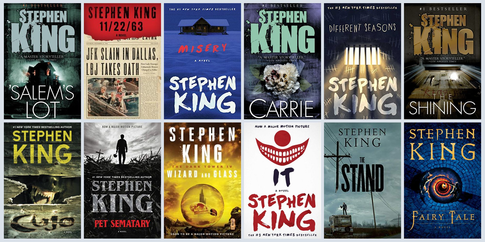

Stephen King is an American novelist and short-story writer whose books are credited with reviving the horror fiction genre in the late 20th century. He is referred to as the "King of Horror," and his appeal even branches to audiences who do not enjoy frightening movies-- while many movie adaptations of his novels are wildly popular, his books exist as a milder, fantastic, and beautifully crafted testament to his skill as a writer.
While there are a series of popular starting points in King's library of text works, "The Shining" is a popular starting place; its immortalization in Kubrick-directed cinema has landed it on a definitive list of classics, but the skill of writing, interest of story, and milder themes within this horror novel color it as an ideal beginning place for those who enjoy a well-balanced, easy-to-read story and wish to veer into the world of literary mystery and horror.
| Title & Percentage | Release Date | Grossing |
|---|---|---|
| Misery, 91% | 1990 | $10,076,834 |
| Carrie, 93% | 1976 | $33.8 million |
| The Shawshank Redemption, 89% |
1994 | $16 million |
| It, 85% | 2017 | $702,781,748 |